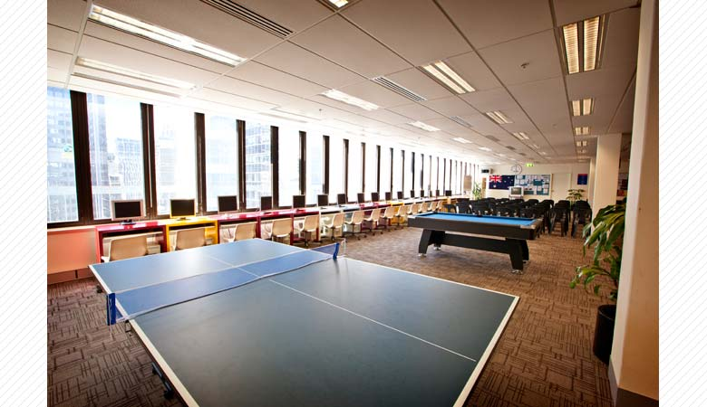
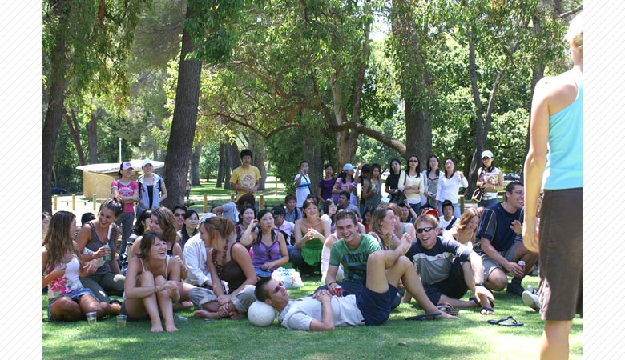
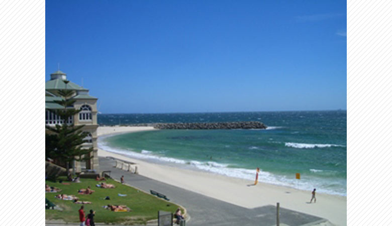
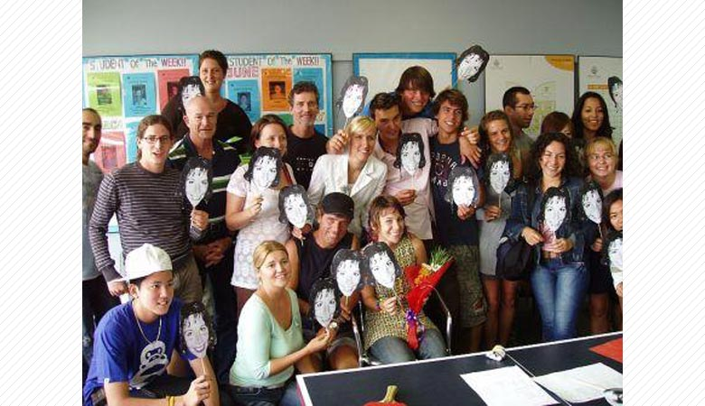
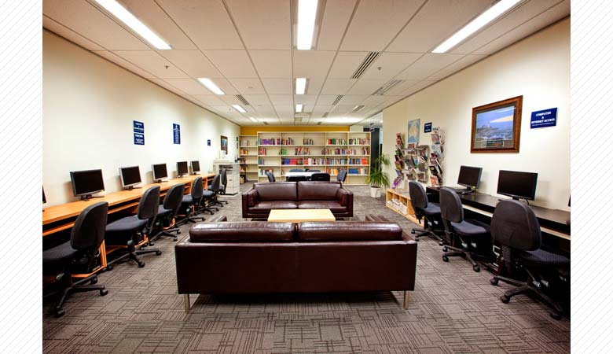

長い歴史を持つメルボルン最大の語学学校！
１９９５年、語学学校としてスタートし、現在は学位レベルのコースも開講しているメルボルンでも歴史ある学校です。
オーストラリア、カナダ、イギリスにかけた３つの国で 世界約40ヶ国から 現在５,000名以上の生徒を受け入れております。

フレンドリーな校風が魅力で、世界約40ヶ国から3000人以上の生徒を受け入れております。
メルボルン、パース、アデレードの3つの都市でキャンパスを構え、
２０１０年からはカナダのバンクーバー、イギリスのバーミンガムにもキャンパスを開校致しました。

大学生との会話クラブがあり、地元大学生との交流会！
CICでは日本語を勉強している現地の大学生と定期的に交流会を行っております。
CICで学んだ英語をすぐに使える実践の場として、ネイティブと友達になれる絶好の機会として大変人気です。

英語＋日本語講師や環境保護 ボランティアコースが人気！
CICでは現地の大学や中学校・高校で、日本語教師のボランティアの手配を行っています。
また、環境保護ボランティアは、ビクトリア州内で行われる環境保護活動に参加できます。

プロのアクティビティコーディネーターと参加するCIC ACTIVITY！
CICではプロのアクティビティコーディネーターMickが充実したACTIVITYをご提供します。

オーストラリアのメルボルンとカナダのバンクーバーキャンパスには日本人スタッフが常駐しており
いつでもお気軽にご相談頂け、その他決め細やかなサポート体制が整っております。
画面をクリックするとビデオが再生されます。
＜Cambridge International College English Course＞